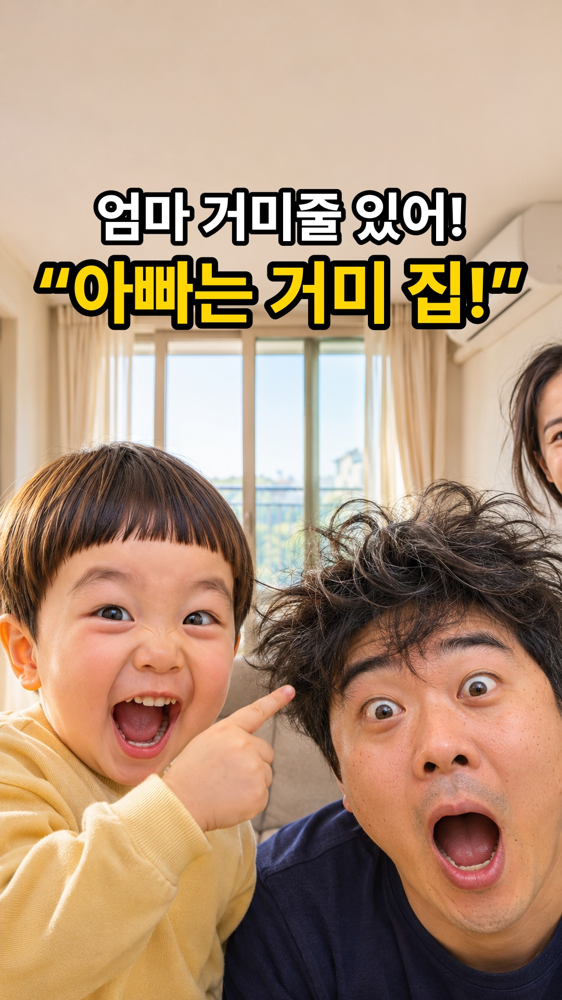
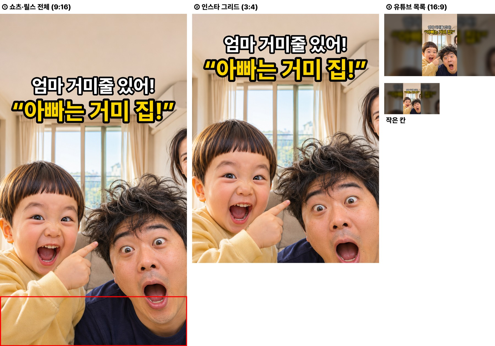
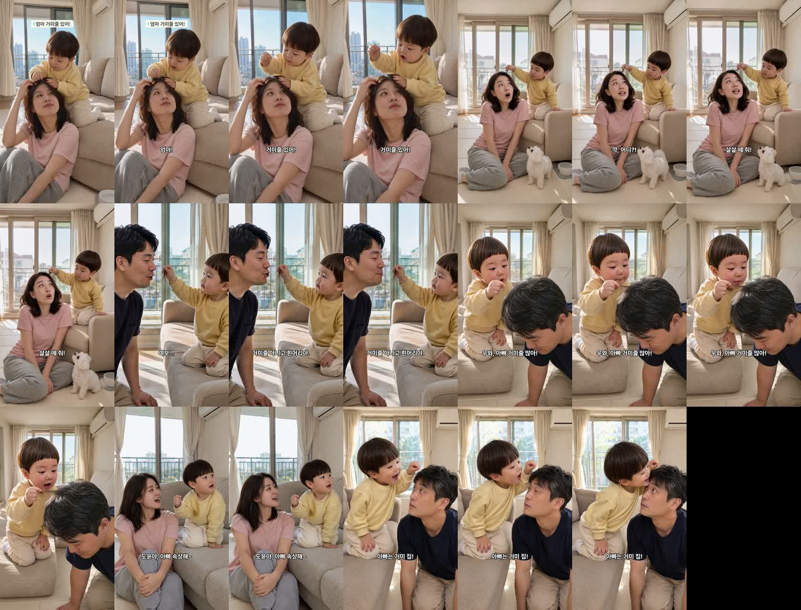
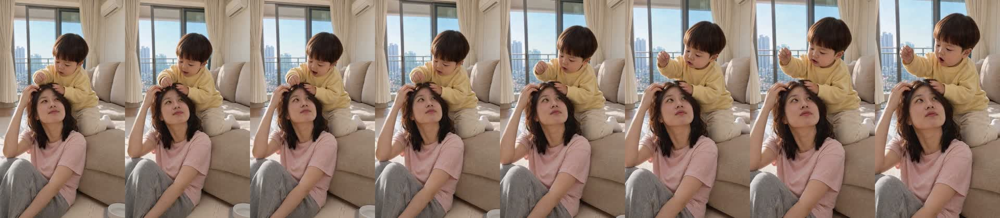
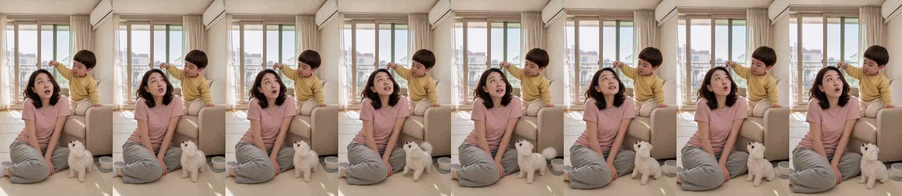
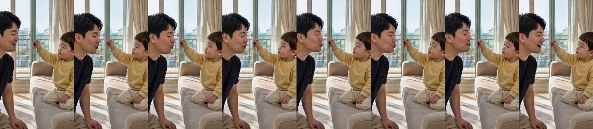
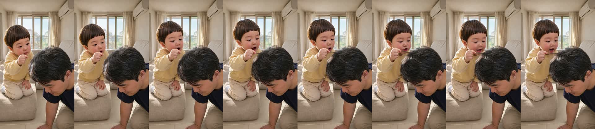
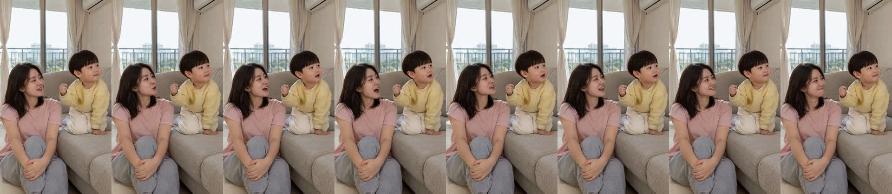
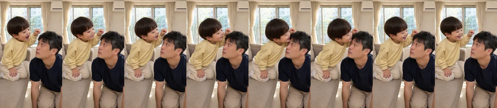

| C01 (0.0~4.0s) | 도윤 [후킹]: “엄마! 거미줄 있어!” 엄마 머리에서 찾은 은색 머리카락 한 가닥을 손끝에 집어 올리며 눈이 동그래진 도윤 |
|---|---|
| C02 (4.0~7.5s) | 엄마: “꺅, 어디?! 살살 떼 줘!” 진짜 거미줄인 줄 알고 어깨를 움츠리며 놀란 엄마와 곁에서 올려다보는 콩이 |
| C03 (7.5~11.0s) | 아빠: “여보… 거미줄 아니고 흰머리야.” 다가와 무릎 꿇고 도윤 손끝의 머리카락을 확인하며 웃음을 참는 아빠 |
| C04 (11.0~14.2s) | 도윤: “우와, 아빠 거미줄 많아!” 고개 숙인 아빠 정수리·관자놀이의 희끗희끗한 새치들을 내려다보며 감탄하는 도윤 |
| C05 (14.2~16.7s) | 엄마: “도윤아, 아빠 속상해~” 두 손을 모아 쥐고 터져 나오는 웃음을 참으며 도윤을 말리는 엄마 |
| C06 (16.7~20.2s) | 도윤 [펀치라인]: “아빠는 거미 집!” 해맑게 웃으며 쐐기를 박는 도윤과 눈만 깜빡이며 굳어버린 아빠 |






